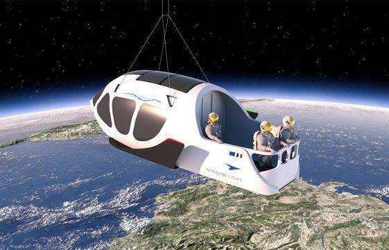

Avec sa capsule stratosphérique, cette entreprise veut créer un balcon à 35 km d’altitude, avec vue sur la Terre

Constater de ses propres yeux que la Terre est bien ronde. Ce rêve, certains l’ont caressé toute une vie. Et s’ils attendent encore quelques années, ils pourront peut-être le réaliser en mettant un peu de sous de côté. Sans être pour autant obligé de débourser des millions d’euros pour grimper dans une navette comme celles développées par Elon Musk, Richard Branson ou Jeff Bezos, qui proposeront du tourisme spatial à bord de la station spatiale internationale ou lors de vols suborbitaux.
Sans viser l’espace et ses 100 km au-dessus du plancher des vaches, plusieurs sociétés se sont lancées ces dernières années dans les vols stratosphériques, grâce à des ballons pouvant atteindre une altitude avoisinant les 35 km et nettement moins polluants que les navettes spatiales. Que ce soit la start-up madrilène Halo Space, qui vient d’annoncer son premier vol d’essai pour la fin de l’année en Inde, Space Perspective en Floride ou encore World View en Arizona, toutes proposent un voyage inédit dans une capsule pressurisée avec vue sur la planète bleue à 360°.
Et les entreprises françaises ont décidé de ne pas rester à quai. Deux d’entre elles, implantées dans l’agglomération toulousaine, ont décidé de se lancer dans la mêlée : Zephalto et Stratoflight.
26/10/22 à 17h13